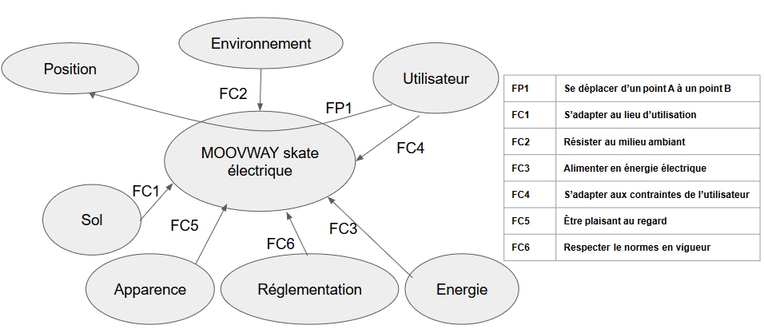

Skate MoovWay
Sommaire
- Présentation du projet
- Choix argumenté du ou des critères à améliorer
- Planification du projet
- Analyse du besoin
- Analyse des interactions entre le système et son environnement
- Analyse structurelle
- Diagramme FAST
- Modélisation
- Expérimentations
- Mesures
Présentation du projet
Le projet étudié est un skate électrique, de la marque MOOVWAY, référence S1.
Quelques caractéristiques techniques :
Type de batterie (lithium) : 25.2V (nominal); 29.4V (max); 2.2 A; Pélec 55.44Wh
Temps de charge batterie : 1h30
Nombre de cycles batterie : 500
Type de roues : 73mm (diamètre) 2.9 pouces
Puissance du moteur : 350W
Moteur synchrone à aimants permanents
Masse net : 3.9kg
Vitesse maximale : 20km/h
Masse maximale acceptée : 60 kg
Temps de charge télécommande: 2 h
Fréquence télécommande : 2.4 GHz
Distance d’éloignement max (télécommande/skate) : 14m
Choix argumenté du ou des critères à améliorer
Chercher à améliorer l’interface utilisateur du skate. Pour ce faire, intégration d’un module Arduino sous le skate, permettant à un instant T, de connaître la charge de la batterie et la vitesse instantanée du système. Ces données seront accessibles sur une application Android/ iOS pour téléphones via le protocole bluetooth.
Cette amélioration permettra de mesurer avec précision la vitesse maximale du skate suivant les types de terrains, ce qui sera utile pour vérifier l’une de nos contraintes techniques (vitesse maximale).
Planification du projet
| Tâches | Début | Fin |
|---|---|---|
| Prise en main des attentes du projet | 18/12/17 | 08/01/18 |
| Analyse fonctionnelle | 18/12/17 | 26/01/18 |
| Classeur n°1 | 26/01/18 | 16/02/18 |
| Elaboration du CDGF | 17/01/18 | 22/01/18 |
| Rédaction des protocoles expérimentaux | 26/01/18 | 14/02/18 |
| Vérifications du CDGF | 14/02/18 | 12/04/18 |
| Finalisation | 12/04/18 | 03/05/18 |

Valentin : Communiquer des informations à l’utilisateur (matlab + ajouts)
Thibaud : Disposer d’une autonomie suffisante par rapport à l’usage
Marin et Thomas : Se déplacer à une vitesse suffisante par rapport à l’usage (vitesse minimale et maximale), sur différents terrains, avec différentes corpulences.
Analyse du besoin

Analyse des interactions entre le système et son environnement

Analyse structurelle

Diagramme FAST

Modélisation
Moteur synchrone à aimants permanents et d’une batterie Lithium ion
Expérimentations
Vitesse
Mesure de vitesse à vide et à charge. Vérifications des données constructeurs (10 et 20 km/h annoncées). Modélisation avec expérimentations sous Matlab.
Mise en place d’une application pour communiquer vitesse instantanée, accélération ainsi que la vitesse moyenne.
Autonomie
Compter le nombre de tours (dont la distance est connue), effectuer avec une charge complète de batterie. Utilisation d’un système GPS afin de vérifier la distance parcourue. Puis comparaison avec un modèle théorique.
Temps de recharge
Calculer la capacité maximale de la batterie avec les données constructeur. Effectuer une mesure de 0-100% avec un ampèremètre. Comparer cette valeur avec les données constructeur (< 3H) et le modèle Matlab modélisant une batterie Lithium Ion